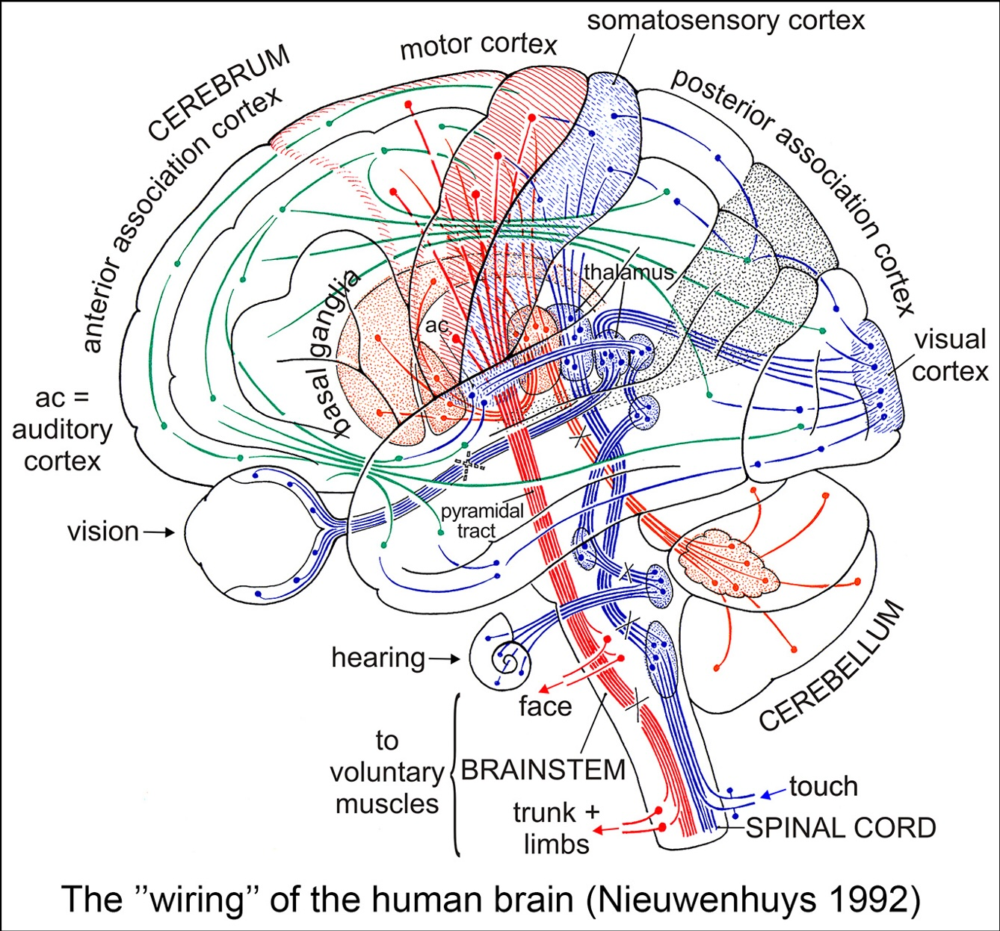
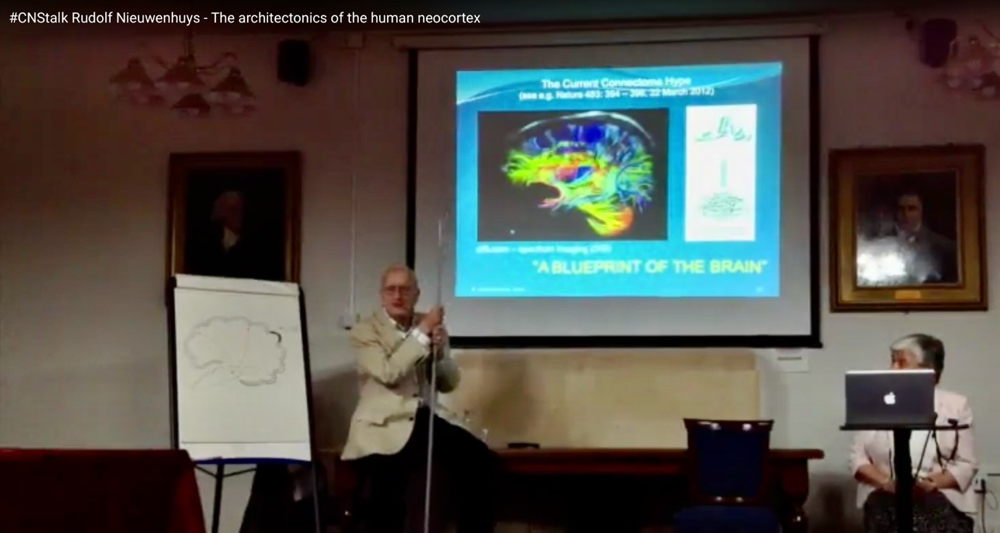

With the passing of Prof. Rudolf Nieuwenhuys (1927–2024), neuroscience has lost one of its great anatomists. A Knight in the Order of the Netherlands Lion, Nieuwenhuys was a lion of neuroanatomy, dedicated to the precise study of brain structure and function. His work in comparative neuroanatomy reshaped our understanding of brain organisation across species, integrating insights from evolutionary biology, functional anatomy, and developmental neuroscience. After retiring, Nieuwenhuys returned to the Netherlands Institute for Neuroscience - NIN, continuing his work on the central nervous system of invertebrates, and culminating in a magnum opus, The Central Nervous System of Vertebrates (1998). In 2008, he completely revised The Human Central Nervous System, further cementing its status as a cornerstone of neuroanatomy textbooks.
Nieuwenhuys’ academic journey began at the University of Amsterdam, where he earned his doctorate, focusing on comparative neuroanatomy. In 1969, he became Professor of Morphology of the Nervous System in Nijmegen, a position he held until his retirement in 1992 (Nicholson and Smeets, 1992; ten Donkelaar et al., 1992). His research spanned the histology of the cerebellum, brainstem organisation, limbic system structure, non-synaptic transmission, and structural changes in the brain in neurological diseases. He introduced the concept that the central nervous system operates within an intrinsic coordinate system, playing a key role in development and organisation. He pioneered a new framework for defining homology in neuromorphology [cross-reference commentary Puelles]. Later in his career, Nieuwenhuys focused on the human cerebral cortex, revisiting the Vogt-Vogt school and publishing a new cortical map in collaboration with Broere and Cerliani (Nieuwenhuys and Broere, 2023), which he compared and contrasted with multimodal MRI-based parcellation (Nieuwenhuys and Glasser, 2024). His lectures at the Max Planck Institute for Human Cognitive and Brain Sciences led to Towards a New Neuromorphology, where he proposed a modernised anatomical framework integrating developmental, structural, and functional perspectives (Figure 1). In this work, he introduced Fundamental Morphological Units (FMUs) as the key building blocks of the brain, by which he incorporated gene expression patterns, neuronal lineage tracing, and developmental histogenetics to refine our understanding of brain organisation.

By linking molecular mechanisms to structural architecture, Nieuwenhuys set a foundation for a more causally informative neuroanatomy. Beyond his academic contributions, Nieuwenhuys also played a role in public outreach and scientific discussion. He was among the early speakers in 2014 to lecture for the online CNStalk series on our YouTube channel, Clinical Neuroanatomy Seminars, where he shared his insights into comparative neuroanatomy and cortical organisation (Figure 2). His participation in this initiative reflects his commitment to educating and inspiring future generations of neuroscientists.

His passing marks another loss in a generation of anatomists who laid the foundation for modern neuroscience. As these figures leave the field, the next generation must carry forward their legacy—not just by adopting advanced imaging and computational tools but by ensuring that neuroscience remains firmly anchored in anatomy. The discipline is well-suited to a multimodal approach, and the best route forward may require just this: integrating classical neuroanatomy, imaging, and big data to build a more profound, biologically grounded understanding of brain function. Nieuwenhuys recognised the balance between tradition and modernisation. Reflecting on his decision to replace Latin terminology in later editions of his work, he described it as “an emotional farewell from beautiful terms such as decussatio hipposideriformis Wernekinkii and pontes grisei caudatolenticulares.” His words serve as a reminder that while neuroscience evolves, its foundation in anatomical precision and careful nomenclature must endure (Dulyan et al., 2025).
As computational neuroscience and AI-driven models shape the field, it is essential to remember that no dataset or algorithm can replace a solid understanding of structural organisation. Multimodal neuroanatomy—combining classical methods with imaging, genetics, and computational tools—is the way forward. In neuroscience, methods evolve, and theories shift, but if you anchor yourself in anatomy, you will never lose your way.
Acknowledgements
I thank Marijtje Jongsma and Wil Smeets for their valuable discussions and insightful feedback.
Funding
This work was supported by a Dutch Research Council NWO Aspasia Grant (SJF), and the Donders Mohrmann Fellowship No. 2401515 (SJF).
References
[1] Nicholson, C., Smeets, W.J., 1992. Rudolf Nieuwenhuys: twenty-five years of comparative neuroanatomy in Nijmegen. Brain Behav. Evol. 39, 381–387.
[2] Nieuwenhuys, R., Broere, C.A.J., 2023. A new 3D myeloarchitectonic map of the human neocortex based on data from the Vogt-Vogt school. Brain Struct. Funct. 228, 1549–1559.
[3] Nieuwenhuys, R., Glasser, M.F., 2024. A Comparison of two Maps of the Human Neocortex: the multimodal MRI-based parcellation of Glasser et al. (2016a), and the myeloarchitectonic parcellation of Nieuwenhuys and Broere (2023), as a first step toward a unified, canonical map. Brain Struct. Funct. 229, 2509–2521.
[4] ten Donkelaar, H.J., Lohman, A.H., van der Loos, H., 1992. Twenty-five years of comparative neuroanatomy in Nijmegen: homage to Rudolf Nieuwenhuys. Eur. J. Morphol. 30, 3–7.
[5] Dulyan, L., Guzmán Chacón, E. G., & Forkel, S. J. (2025). Navigating neuroanatomy. In J. H. Grafman (Ed.), Encyclopedia of the Human Brain (2nd ed.). Amsterdam: Elsevier. https://doi.org/10.1016/B978-0-12-820480-1.00203-5